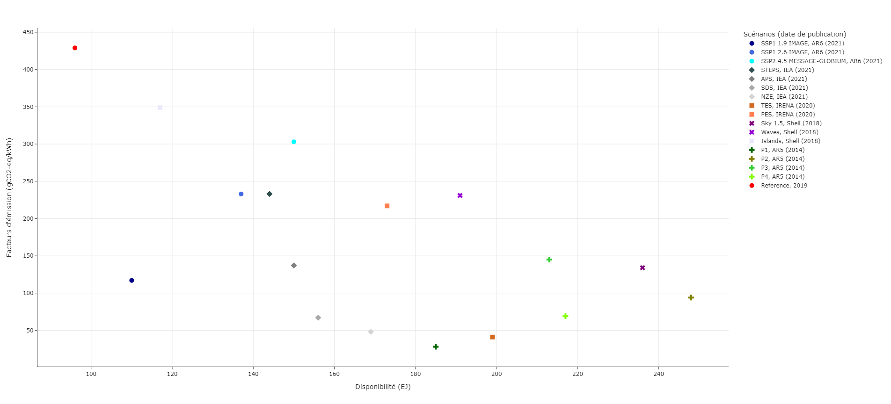

Impact modeling and sustainability assessment#
After defining the evolution of air transport via dedicated models, specific models evaluate the associated impacts, and then compare them with limits via a sustainability assessment.
Impact modeling#
In the following, the models used for estimating the impacts induced by air transport are described. Currently, the majority of impact modeling concern environmental impacts.
Emissions and climate impacts#
CO2 emissions#
Based on the modeling of the air transport system through a Kaya decomposition, the estimation of the evolution of CO2 emissions is simple by multiplying the different factors. In addition, a coefficient corresponding to other life cycle emissions (excluding combustion and fuel production) can also be applied, but it only represents a few percent of the aviation environmental impacts [PMBC+20].
Non-CO2 emissions#
For estimating non-CO2 emissions, the concept of Emission Index (EI) is used. They make it possible to obtain different emissions (NOx, SOx…) depending on fuel consumption (or CO2 emissions). Values for fossil kerosene from [LFS+21] have been used and are provided in Tab.1. The values can be adapted for alternative energy carriers.
Emission |
Value |
Unit |
|---|---|---|
CO2 |
3.15 |
kgCO2/kgfuel |
H2O |
1.23 |
kgH2O/kgfuel |
NOx |
15.1 |
gNOx/kgfuel |
Aerosols (soot) |
0.03 |
gBC/kgfuel |
Aerosols (sulfur) |
1.2 |
gSOx/kgfuel |
Tab.1 Emission Index for fossil kerosene combustion.
Based on these data, the estimation of the climate impact of aviation is achieved by the calculation of the ERF (Effective Radiative Forcing), which is based on the use of coefficients for the different impacts. These are obtained through an analysis of the data from [LFS+21] and are summarized in Tab.2. CO2 emissions are cumulative: therefore, at first order, the coefficient to estimate the ERF must be applied on the cumulative CO2 emissions. The impact of the other emissions is estimated from the annual emissions. Finally, the impact of contrails is assumed to be correlated with the total annual distance flown.
Climate impact |
Value |
Unit |
|---|---|---|
CO2 (cumulative) |
0.88 |
mW/m2/GtCO2 |
H2O |
0.0052 |
mW/m2/TgH2O |
NOx |
11.55 |
mW/m2/TgN |
Aerosols (soot) |
100.7 |
mW/m2/TgBC |
Aerosols (sulfur) |
-19.9 |
mW/m2/TgSO2 |
Condensation trails |
1.058.10-9 |
mW/m2/km |
Tab.2 Coefficients for estimating the ERF of aviation climate impacts.
Using the data and taking into account CO2 and non-CO2 effects, aviation (including private and military) generated 3.8% of the effective radiative forcing between 1750 and 2018 and commercial aviation is responsible for 5.1% of the increase in effective radiative forcing over a more recent period (2000–2018), compared to global ERF estimated in the IPCC AR6.
Lastly, equivalent emissions can be estimated to simplify the comparison with CO2 emissions, but also to estimate the impacts on the temperature evolution in a second step. Multiple metrics are available in the scientific literature to estimate them [APF13, SFHS05]: GWP, AGWP, GTP, AGTP, etc. GWP is the most known and used metric, often used with a 100-year time horizon. However, this metric is limited for representing the evolution in terms of temperature for Short-Lived Climate Pollutants (SLCPs) [LCPA20], which is the case for aviation non-CO2 effects. As a consequence, an alternative metric is used here. GWP* is an improved climate metric developed recently [ASF+18, CLA+19, CFFS20], one of the major interests of which is to better evaluate the effect of SLCPs. It allows to estimate the equivalent emissions in CO2-we for a better match with the evolution in temperature (warming equivalent). In this sense, it thus represents a simplified climate model compared to other more complex climate models that may require long computation times [MN22]. Compared to GWP, it does not only take into account the absolute value of the emissions but also the variation of the emission rate. The following equation allows estimating the equivalent emissions, noted \(E_{CO_2\text{-we}}\), of a gas \(G\) for a time horizon \(H\), as a function of the absolute emissions \(E_G\) and the variation of emissions \(\Delta E_G\) over a period \(\Delta t\). The parameters \(r\) and \(s\) depend on the gas and represent the influence of cumulative or short-term effects.
\(E_{CO_2\text{-we}} = \text{GWP}_H ~ \left(r ~\frac{\Delta E_G}{\Delta t}~H + s~E_G \right)\)
This equation can be modified to be used for aviation non-CO2 effects, based on assumptions from [ASF+18, LFS+21], with in particular \(r=1\) and \(s=0\). As a consequence, the following equation is used with \(E_{CO_2\text{-}we}\) the equivalent emissions of a non-CO2 effect for a given year, \(\Delta F\) the corresponding variation of the ERF over a period \(\Delta t\) of 20 years (smoothed over 5 years to better represent global trends), a time horizon \(H\) of 100 years and the absolute global warming potential of CO2 over 100 years \(AGWP_H\) of 88 yr.mW/m2/GtCO2.
\(E_{CO_2\text{-}we} = \frac{\Delta F}{\Delta t} \frac{H}{AGWP_H}\)
Temperature estimation#
Based on the knowledge of the CO2 emissions and non-CO2 effects via equivalent emissions, it is possible to estimate the temperature increase due to air transport \(T_{k}\) for the year \(k\). For this purpose, the following equation is used with \(T_{2019}\) the temperature increase from air transport in 2019 (from [GGRGronstedt+21]), \(E_{CO_2, k}\) the annual CO2 emissions and \(E_{CO_2\text{-}we, k}\) the annual equivalent emissions for non-CO2 effects using GWP*. The value of the TCRE (Transient Climate Response to cumulative carbon Emissions) depends on climate model settings, with median estimates on the order of 0.45°C/1000GtCO2. However, it is also possible to estimate the temperature increase from air transport using dedicated climate models for more accurate results.
\(T_{k} = T_{2019} + TCRE ~ \sum_{i=2020}^{k} (E_{CO_2, k} + E_{CO_2\text{-}we, k})\)
Energy resources#
The description of the energy carriers envisaged for air transport makes it possible to estimate the quantities of fuels to be used (embarked energy), but also the quantities of energy required to produce them using conversion efficiencies. The quantities of biomass and electricity consumed are then directly calculated. The selectivity of the pathways producing these energy carriers, defined as the proportion of kerosene in the fuel output (usually measured by energy), can also be taken into account. It allows to estimate the amount of energy that has to be used to produce kerosene and other outputs. However, in general, an allocation of consumption is made to other outputs for estimating the “real consumption” due to kerosene (which means that selectivity is not taken into account).
Economic#
These models are under development.
Sustainability assessment#
In the following, the methodologies used to assess the environmental sustainability of scenarios are presented, based on estimates of induced environmental impacts. Only climate and energy issues are considered. Indeed, these two environmental issues are the most impacting when considering air transport (see for instance [Planes22]).
Climate sustainability#
Climate sustainability assessment can be performed using various methodologies. For example, carbon budgets. It is an interesting concept used by the IPCC in the context of global warming mitigation strategies. It is defined as the maximum remaining cumulative CO2 emissions that can be emitted to limit the temperature increase below a certain value (for example +1.5°C). For instance, Tab.3 summarizes estimates of carbon budgets for different temperature targets. The emissions considered are net emissions: they are the difference between gross anthropogenic CO2 emissions and anthropogenic carbon sinks. Cumulative CO2 emissions and mean temperature increase are linked by a quasi-linear relationship, which facilitates the estimation of carbon budgets [MGSZ09]. Therefore, the use of carbon budgets allows for example to simply evaluate the relevance of transition scenarios to reach climate objectives based on their CO2 emissions alone [FAR+14].
Temperature [°C] |
17th |
33rd |
50th |
67th |
83rd |
|---|---|---|---|---|---|
1.5 |
900 |
650 |
500 |
400 |
300 |
1.6 |
1200 |
850 |
650 |
550 |
400 |
1.7 |
1450 |
1050 |
850 |
700 |
550 |
1.8 |
1750 |
1250 |
1000 |
850 |
650 |
1.9 |
2000 |
1450 |
1200 |
1000 |
800 |
2.0 |
2300 |
1700 |
1350 |
1150 |
900 |
Tab.3 Estimates of carbon budgets depending on TCRE percentile according to IPCC AR6 (in GtCO2).
However, these carbon budgets are defined globally and not by country or sector (like aviation). In the following, a method which can be applied to aviation CO2 emissions is proposed. This later is also extended to include non-CO2 effects using two solutions.
CO2 effects#
First, a global gross carbon budget \(GCB\) is considered. As a reminder, it is defined as the sum of a net carbon budget and a CDR (Carbon Dioxide Removal) capacity (afforestation, BECCS, DACCS…). It is assumed that this budget will be entirely consumed by 2100. This constraint is expressed in the following equation via cumulative emissions, considering \(E_{CO_2,k}\) emissions for year \(k\) from 2020.
\(GCB = \sum_{k=2020}^{2100} E_{CO_2,k}\)
An infinite number of trajectories for CO2 emissions can satisfy this constraint. In the following, a simplified model of emissions decay at a fixed annual rate \(x\) is considered. The previous equation can then be written as the following one. This is a geometric series which can then be expressed more simply. This equation can then be solved implicitly to determine the annual rate of decrease of emissions \(x\).
\(GCB = \sum_{k=2020}^{2100} E_{CO_2,2019}~(1-x)^{k-2019} = E_{CO_2,2019}~ \frac{(1-x)-(1-x)^{82}}{x}\)
Here, the scope of the scenario studies is limited to 2050. Therefore, the following equation is used to determine the adjusted global gross carbon budget to 2050 \(GCB_c\).
\(GCB_c = E_{CO_2,2019}~\frac{(1-x)-(1-x)^{32}}{x}\)
Finally, it is necessary to allocate a share of this carbon budget to aviation. Thus, the carbon budget for aviation (by 2050) \(GCB_A\) is simply calculated using the following equation via an allocated share \(F\).
\(GCB_A = F~GCB_c\)
The choice of the share allocated to the aviation sector is a political one and may involve multiple criteria (technical, economic, societal, etc.). Discussions on this allocation are proposed in [DFG+22]. An interesting reference value is the recent contribution of aviation to CO2 emissions (also called grandfathering approach). For example, it is 2.6% on the perimeter of commercial aviation considering global CO2 emissions [DFG+22]. This value can be interpreted as the share that would be allocated to the aviation sector under a non-differentiated approach where all sectors reduce their emissions at the same rate. Allocations below or above this value can also be considered. However, allocating a larger share mechanically requires other sectors to reduce their emissions faster than the average to meet the global carbon budget. This type of trade-off may require multi-sectoral approaches, as for example proposed in [ScienceBTInitiative15]. In this scenario, cumulative direct CO2 emissions from aviation would represent 3.4% of the considered carbon budget of 1055 GtCO2 over the period 2011–2050.
Therefore, the climate sustainability of a scenario (regarding CO2 emissions) can be assessed by comparing the cumulative CO2 emissions with the allocated carbon budget for aviation. If the cumulative emissions are less than or equal to the carbon budget, the climate target is met.
CO2 and non-CO2 effects#
For assessing the sustainability of aviation climate impact, a first solution is to directly compare the temperature increase from air transport to a climate objective (via an allocation or an absolute target) which is for instance performed in [GGRGronstedt+21, KlowerAL+21].
Another solution is to extend the previous approach in order to maintain a methodology similar to that used for CO2 emissions. So-called equivalent carbon budgets are then calculated. For this purpose, a global equivalent gross carbon budget \(EGCB\) is calculated via the following equation, which has been adapted from simplified models for estimating carbon budgets described in [RFK+19]. The \(T_{non-CO_2}\) term depends on the temperature objective considered: it is for example equal to 0.1°C for a +1.5°C target and to 0.2°C for +2°C.
\(EGCB = GCB + \frac{T_{non-CO_2}}{TCRE}\)
The same approach as for CO2 emissions is then used to define an equivalent carbon budget for aviation. Allocation rules must also be defined. The reference value considered this time is 5.1%, on the perimeter of commercial aviation, over a recent period and including global CO2 emissions and non-CO2 effects [DFG+22].
Therefore, as before, the climate sustainability of a scenario (for all effects) can be assessed by comparing the cumulative equivalent emissions with the equivalent carbon budget calculated for aviation. As introduced previously, the equivalent emissions are also calculated using the GWP* climate metric. The total cumulative equivalent emissions are thus the sum of the cumulative emissions of CO2 and the sum of these annual equivalent emissions for each non-CO2 effect from 2020 to 2050.
Energy resource sustainability#
The assessment of energy resource sustainability is based on an approach similar to the one presented for climate issues. This time, rather than comparing cumulative emissions to carbon budgets, the energy consumption of a scenario is compared to available energy resource budgets. Only biomass and electricity energy resources are studied in this work. To simplify the comparisons, the availabilities are checked in 2050. A more comprehensive approach would be to check the availability of energy resources on an annual basis.
In the same way as for carbon budgets, an arbitrary allocation of energy resources for aviation is assumed. The choice of a reference value can, for example, be based on the contribution of the sector to world energy or oil consumption (of the order of 2 to 3% or 7 to 8%). Thus, a scenario can be considered sustainable from an energy point of view if the consumption of energy resources in 2050 does not exceed the energy resource budget considered.
In the following, some examples of reasonable values are proposed.
Biomass availability#
The estimation of the available biomass at the global level is complex and depends on several criteria. In this work, a statistical analysis of IRENA (International Renewable ENergy Agency) data is performed. The resource categories described for the biofuel pathways are used. The results are given in Tab.4. The lower and upper fences are determined to exclude extreme values (outliers).
Resource |
Lower fence |
Q1 |
Median |
Q3 |
Upper fence |
|---|---|---|---|---|---|
Waste |
9 |
10 |
12 |
20 |
27 |
Agricultural residues |
10 |
30 |
57 |
103 |
204 |
Forest residues |
5 |
15 |
17 |
39 |
59 |
Energy crops |
8 |
37 |
63 |
109 |
217 |
Algae |
5 |
8 |
15 |
31 |
50 |
Total |
37 |
100 |
164 |
302 |
557 |
Tab.4 Global biomass availability (in EJ) scenarios to 2050.
The estimates in Tab.4 are refined using an analysis of the references [SMB17, SMS+18] to obtain detailed results for different resources. Concerning waste, used cooking oil represents a deposit of about 1 EJ, the rest being municipal solid waste. Energy crops are divided into 63% lignocellulose, 9% vegetable oils and 28% sugar or starch-based materials.
The results obtained are consistent with [SBG14] which concludes that likely estimates are less than 300 EJ. Similarly, the results by resource type are of the same order of magnitude as those given in [OMalleyPS21].
Electricity availability#
Concerning electricity at the global level, the estimation is also complex due to technical, economic or political factors. Multiple availability scenarios are proposed by academic, industrial and institutional actors. Several scenarios are thus represented on Fig.1, with the estimation of the availability but also of the emission factor of the electricity mix. It is interesting to note the reference point in 2019 and the wide dispersion of the scenarios. Moreover, all the scenarios forecast an increase in electricity production and a decrease in the emission factor. For comparison, the emission factors at the global level for low-carbon production means are lower than 50 gCO2-eq/kWh, with values of the order of 10 gCO2-eq/kWh for wind or nuclear power [SQP+13]. In this work, the electricity energy resource budget is therefore based on these different estimates.

Fig.1 Global electricity production scenarios to 2050.